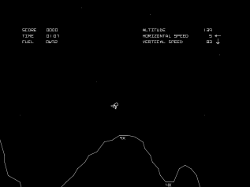
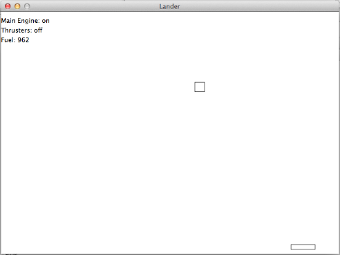

Permalink
PermalinkProject Suggestion #1
Lunar Lander
Posted, 11 Mar 2013
Difficulty: medium - hard
Lunar Lander was a vector-based arcade game released in the 1970s, where you controlled a spacecraft landing on the lunar surface. You could rotate your craft, and then activate your engines to move to the left or right, and to control the speed of your descent. Land too hard and your spacecraft exploded, land on a smaller platform and you got a higher score. Take too long to land and you run out of fuel and drop like a stone (you can find a version of Lunar Lander on the Atari website if you want to try it out for yourself).

(Image courtesy Wikipedia)
{kind=link}
We're not going to try anything quite that ambitious, but we can certainly create a simple version of the lander. Our version of the game will have a downward facing engine that turns on when the player hits the down arrow (and turns off when they hit the key again). A left thruster which fires when they press the left arrow key, and a right thruster which fires when they press the right arrow. The lander will fall from the centre of the screen and the player will try to land on a small platform without hitting it too hard.
You don't have to spend too much time making it look good - at least to start with, try playing with a simple square for the lander, a rectangle for the platform, and use text to display whether the engine or the thrusters are firing, and for the fuel level. Chapters 12, 13 and 14 in the book will probably help you get started.

Once you get the basic game working, there's all sorts of things you can do to tidy it up and make it look good.
Update: you can find part of the solution here.